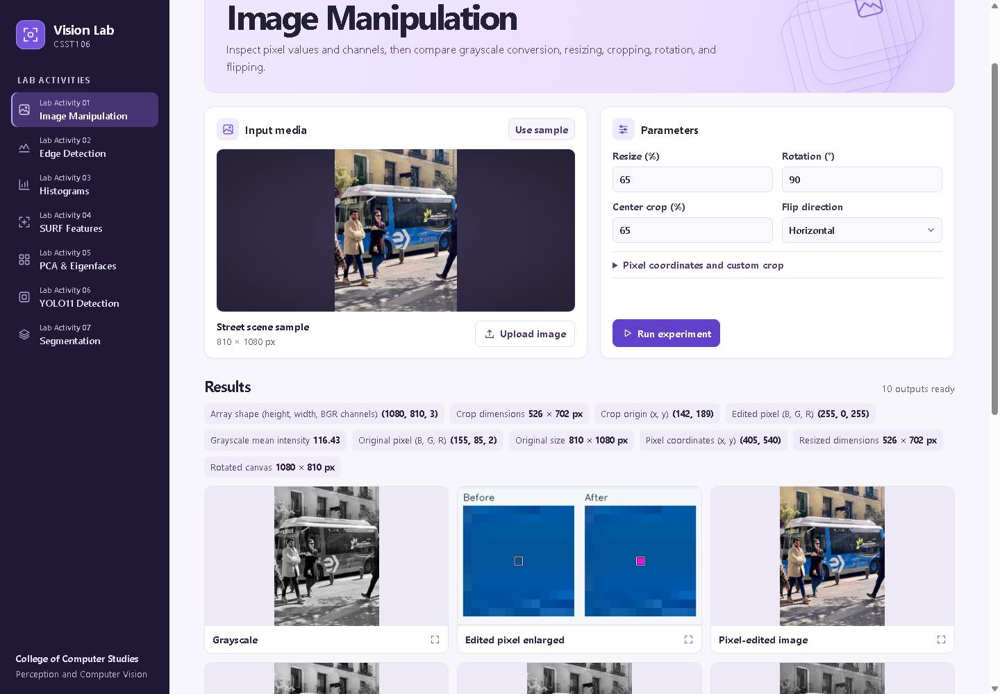
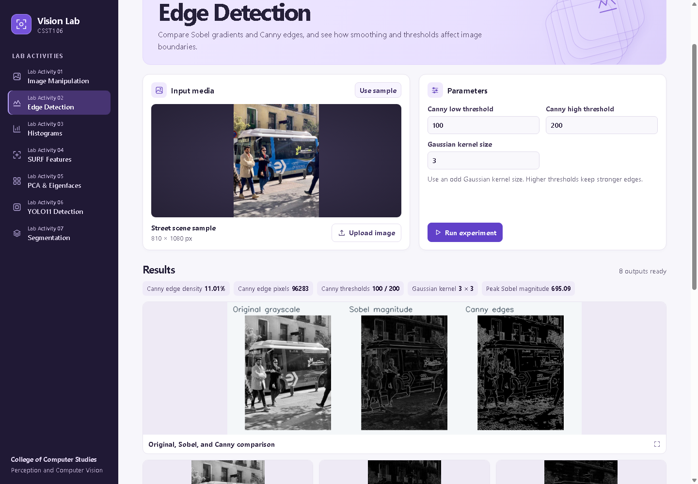
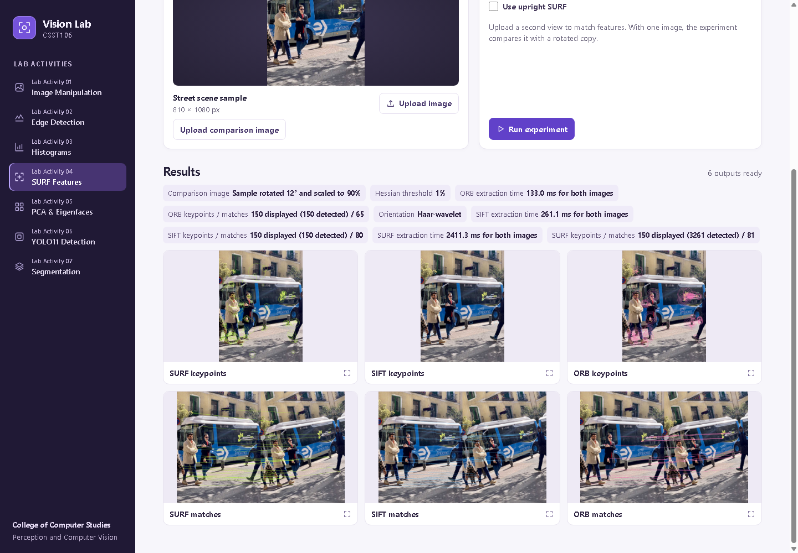
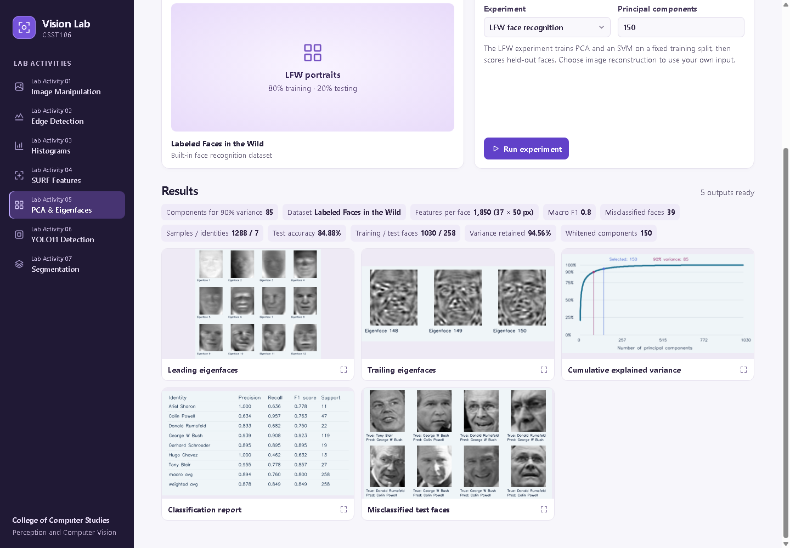
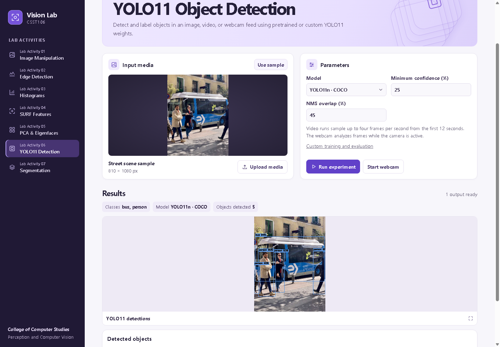
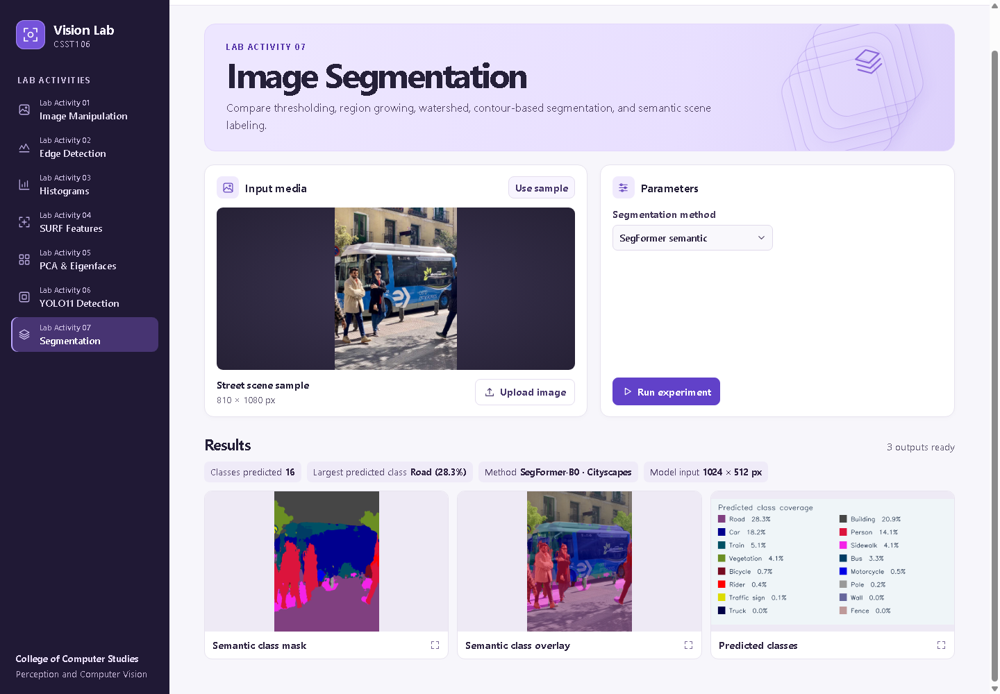

College of Computer Studies
Laboratory Report
CSST106 · Perception and Computer Vision
First semester · Academic year 2026–2027
This report follows the course announcement’s attachment order. The Lab 6 filename refers to YOLOv8 and the exercise itself specifies YOLO11. Results come from the companion Web UI and its training workflow.
The Lab 4 and Lab 7 handouts also request handwritten answers on A4 paper.
Lab Activity 01
Image Manipulation
Objective
Examine how a digital image stores pixel intensities and color channels, then apply basic image operations.
Algorithm and techniques
Represent the color image as a height × width × 3 array and grayscale as a single intensity per pixel. The inspector lists channel values in OpenCV’s blue, green, red (BGR) order. Apply pixel assignment, channel extraction, crop, resize, rotation, and flip.
Procedure
- Load a color image and record its dimensions and array shape.
- Choose a pixel, read its BGR values, and change its color.
- Set the crop region and scale. Apply a 90° rotation and inspect the originals and processed views.

Results
Run results are awaiting capture.
Conclusion
Pixel coordinates and channel values make individual image edits measurable. Cropping, resizing, and rotation change spatial layout, while grayscale reduces each pixel to one intensity value.
Lab Activity 02
Edge Detection
Objective
Compare the Sobel and Canny edge maps produced from the same grayscale image.
Algorithm and techniques
Apply 3 × 3 Gaussian smoothing before running horizontal and vertical Sobel filters. Combine their responses as gradient magnitude. Canny thins gradient responses and links edges using two thresholds.
Procedure
- Open the input image and inspect its grayscale view.
- Run Sobel and Canny, with Canny thresholds initially set to 100 and 200.
- Compare the original grayscale image, Sobel magnitude, and Canny map side by side.

Results
Run results are awaiting capture.
Conclusion
Sobel magnitude gives a graded response and can show wider edges. Canny produces a binary map with thinner boundaries, and its thresholds determine whether weaker detail appears.
Lab Activity 03
Histogram Analysis
Objective
Measure intensity distributions and compare contrast stretching with global and adaptive histogram equalization.
Algorithm and techniques
Linear stretching expands the observed intensity range. Global equalization redistributes intensities using a cumulative histogram, with color processing applied to luminance. CLAHE uses local tiles and limits histogram peaks before equalizing each tile. OpenCV histogram equalization
Procedure
- Load an image and inspect its grayscale intensity distribution.
- Run the contrast and equalization methods and compare their images and histograms.
- Look for recovered detail and amplified noise in flat or dim areas.
Results
Run results are awaiting capture.
Conclusion
One global mapping can strengthen contrast and amplify noise. CLAHE can reveal detail under uneven lighting while limiting enhancement in each tile. These operations can make features easier to inspect in low-contrast photographs.
Lab Activity 04
SURF Feature Detection
Objective
Detect SURF keypoints and compare how SURF, SIFT, and ORB describe and match local features across two images.
Algorithm and techniques
SURF’s Fast-Hessian detector approximates derivatives with box filters on an integral image. Haar wavelet summaries yield a 64-value descriptor. Upright SURF uses a fixed orientation. Matching uses L2 distance for SURF and SIFT and Hamming distance for ORB. Bay et al., SURF paper
Procedure
- Load two images of the same scene or use the sample with its rotated, scaled copy.
- Adjust the Hessian threshold and compare oriented SURF with upright SURF.
- Compare keypoints, descriptor matches, and processing time across SURF, SIFT, and ORB on the same pair.

Results
Run results are awaiting capture.
Conclusion
Raising the Hessian threshold generally reduces the number of keypoints. Descriptors encode local appearance so features can be matched across images. The number of matches and processing time depend on the image pair and detector settings.
Lab Activity 05
PCA and Eigenfaces
Objective
Reduce the dimensionality of face images, visualize eigenfaces, and evaluate identity classification on a held-out portion of Labeled Faces in the Wild (LFW).
Algorithm and techniques
Flatten grayscale faces and center each feature using its training-set mean. Fit randomized PCA on training samples and whiten the scores by dividing each component by its training standard deviation before balanced radial-basis SVM classification.
Procedure
- Load LFW faces with at least 70 examples per person at 0.4 scale, then split 80/20 using seed 42.
- Fit 150 PCA components, inspect the leading and trailing eigenfaces, and find the component count at 90% explained variance.
- Compare test precision, recall, and F1, and inspect misclassified faces.

Results
Run results are awaiting capture.
Conclusion
Eigenfaces 1–3 highlight face shape, left-to-right lighting, and the central face. Components 148–150 show finer variation around the eyes, nose, mouth, and jaw. Several missed predictions show glasses, glare, or head tilt, which can shift the intensities and locations of facial features. Whitening gives retained scores comparable scales for the SVM’s distance calculations.
Lab Activity 06
YOLO11 Object Detection
Objective
Locate and classify objects with pretrained YOLO11 and evaluate a detector fine-tuned on labeled examples.
Algorithm and techniques
YOLO11n predicts class scores and bounding boxes. The confidence threshold filters low-scoring predictions, and non-maximum suppression reduces duplicate boxes. Custom training uses normalized boxes and a dataset YAML with class names and train/validation paths. Ultralytics YOLO11 documentation
Procedure
- Run pretrained inference on an image, video, or webcam frame and inspect class and confidence labels.
- Use the training script to generate 80 training, 16 validation, and 16 held-out images with blue-card and orange-badge labels. Fine-tune for five CPU epochs at 192 × 192 pixels.
- Check validation precision and recall and apply the trained checkpoint to a new input.

Results
Run results are awaiting capture.
Conclusion
Classification labels the whole image. Detection locates and labels individual objects, such as each pedestrian in a street scene. Box training loss fell from 1.044 to 0.333. The high validation and test scores reflect the two synthetic card classes and their generated scenes.
Lab Activity 07
Image Segmentation
Objective
Compare thresholding, region-based, edge-based, and semantic approaches to assigning image pixels to regions.
Algorithm and techniques
Otsu and adaptive thresholding use global and local intensity rules, respectively. Region growing expands from seed pixels and watershed traces boundaries between seeded areas. Canny contours locate closed boundaries. SegFormer-B0 assigns Cityscapes class labels to pixels.
Procedure
- Use a simple high-contrast image for thresholding and a complex image for semantic segmentation.
- Vary seed settings, then run the region and edge methods on the same image.
- Compare masks, contours, and class labels. When annotated masks are available, use intersection over union to quantify overlap.

Results
Run results are awaiting capture.
Conclusion
Thresholding is fast but depends on contrast. Region methods use pixel similarity and depend on seed choices. Edge methods outline sharp boundaries and can lose regions when contours are broken. Semantic models label meaningful regions with higher compute cost. The street result shows mixed vehicle labels around the bus.